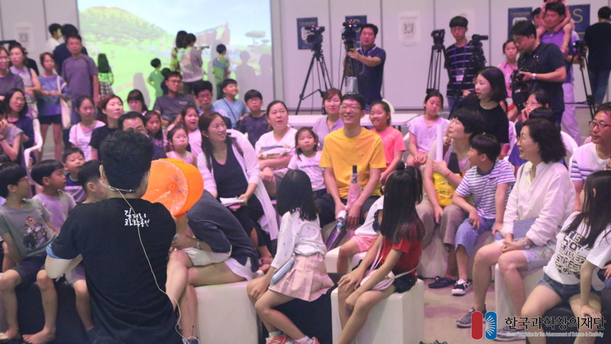
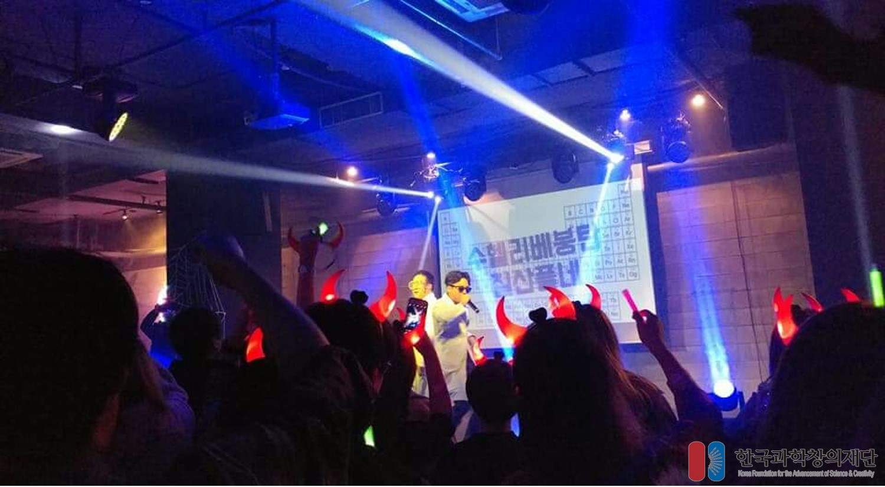
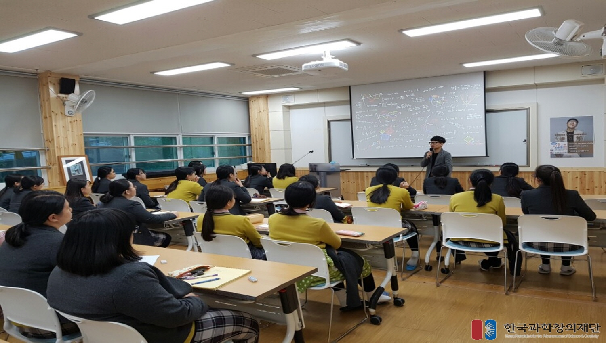
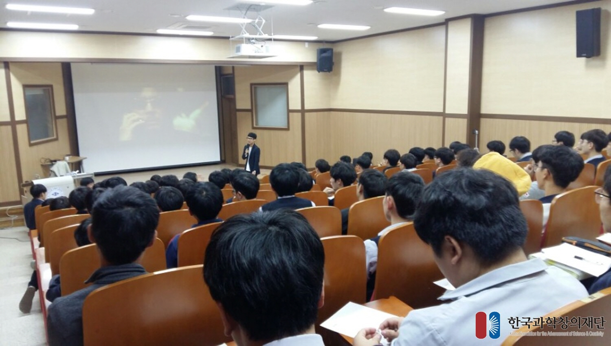

Science Communication
My role: speaker, actor, content development
Science communication, a core program of the Korea Foundation for the Advancement of Science & Creativity (KOFAC), presents science to the public in an easy way. I developed and performed content such as talks, street performances, and plays.




2020
12.05 Pohang Youngshin High School
11.14 Gyeongju Moonhwa High School
10.31 Andong Kyung-An High School
10.28 Pohang High School
09.25 Pohang Idong High School
2018
01.12 Daegu Suseong-gu Gosan Library
2017
12.28 KIST Science Station
12.27 Osan Sema High School
12.21 Andong Kyung An Middle School
12.20 Jeonbuk Imsil High School
12.15 Cheongju Geumcheon High School
12.14 Daegu Sungseo Middle School
11.26 Gwangju Ildong Middle School
11.24 Ilsan Deogi High School
11.17 Busan Youngnam Middle School
11.10 Ulsan Dongchun High School
11.03 Andong Middle School
11.02 Uljin Maehwa Middle School
10.31 Mokpo Jeongmyeong Girls' Middle School
10.30 Mokpo Hyein Girls High School
10.25 Incheon Hak Ik High School
10.23 Pyeongtaek High School
10.18 Gwangju Chosun University High School
10.17 Incheon Buil Girl's Middle School
10.16 Daejeon Hanbat Middle School
10.13 Wonju High School
08.31 KIST Science Station
06.12 Yongin Seongji Highschool
05.19 Busan Samsung Girl's High School
05.10 Yangsan Mulgeum High School
2016
12.02 Yeungchon High School
11.23 The 5th Integrated Science Leading Teacher Training
10.14 Pohang High School
09.06 Sunil Girls High School
09.03 National Youth Science Exploration Competition
07.22 The 13th Yeongcheon Bohyeonsan Starlight Festival